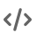
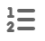

Using the markdown editor
The default mode of entry for posts in Discourse at Mark's Math is Markdown, which is a useful tool to understand in its own right since it's widely used in
- Website and blogging software, like Squarespace and Wordpress
- Version control systems, like GitHub
- Note taking tools, like Obsidian
- Communication Platforms, like Reddit and Stack Exchange.
Markdown is intended to be a lightweight, easy to read/write syntax to indicate how text should be nicely formatted For example, if I wanted my rendered text to look like this:
Reasons Markdown is awesome
Markdown is really awesome because
- it's easy to read,
- it's easy to write,
but that's all?
- Actually, there's a lot more, like the output is awesome!
Reasons markdown is not awesome
I could type:
## Reasons Markdown is awesome
**Markdown** is really awesome because
- it's easy to *read*,
- it's easy to *write*,
- ~~but that's all?~~
- Actually, there's a lot more, like the output is **awesome**!
## Reasons markdown is not awesome
- **NONE!**
Note how it's just basic text with a few extra symbols like
**bold** for bold*italic* for italic.~~strike through~~ for strike through
Higher level items include hashtags (like ##) for sections and dashes (like -) for list items. You can take a look at the Markdown cheatsheet already linked for a more complete introduction.
The toolbar
We've already met Discourse's toolbar:
When editing in markdown mode, the toolbar essentially functions as a Markdown assistant. Thus, you can insert the required markdown by pressing
- for bold text
- for italic text.
- for headings
- for hyperlinks
- for block quotes

for code- for images
- for bulleted lists

for numbered lists, and- for emojis
There are three other buttons on either side of the toolbar:
- that toggles between markdown and rich editors,
- that accesses the AI proofreader, which is particularly convenient for entering math, and
- that provides access to additional options like Math Mode.
These are really not hard to figure out, if you just play around a bit!
Images
The icon in the toolbar is used to include images. When you click on it, you can choose an image from your machine, that image will be uploaded, and the proper Markdown syntax will be inserted into your post.
That's how I inserted the image of the toolbar in the first place!
Dynamic images with Desmos
If you use Desmos, you can create really nice images and make them interactive as well. Here's an example
Note that you can move the h-slider to illustrate one of the fundamental ideas of calculus. The image is a direct embedding of this Desmos graph.
To embed any Desmos graph, simply click the share button in the top right of the Desmos window.

{kind=link}